Chapter 2 · Part 1 — The Open Book
Jack showed Annie the piece of paper. It said:
Help me - Under a spell. Find 4 thin
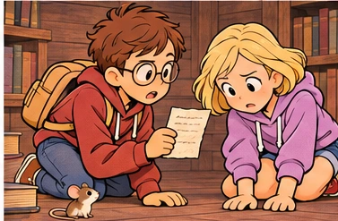
“Oh no,” said Annie. “We have to help her. But what’s a thin?”
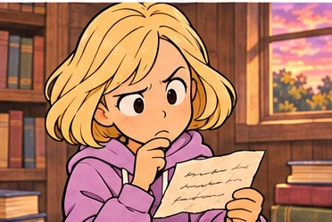
“Maybe she was trying to write things,” said Jack. “See how the n sort of runs off the page?”
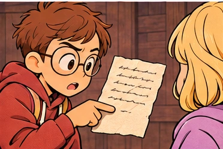
“Maybe the spell was starting to make her disappear or something,” said Annie.
“Right,” said Jack. “I wonder if she left any other clues.” He glanced around the tree house.
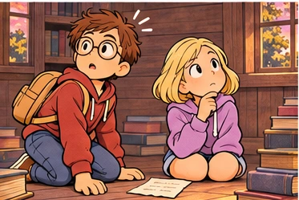
“Look!” Annie pointed at a book in the corner. “That’s the only open book,” she said.
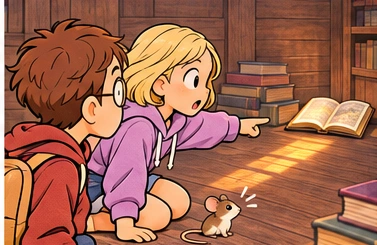
Jack looked around again. Annie was right. He felt a shiver go down his spine.
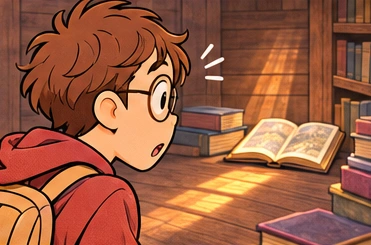
Jack went over to the book and picked it up. He held it near the window. Light from the setting sun was golden on the page.
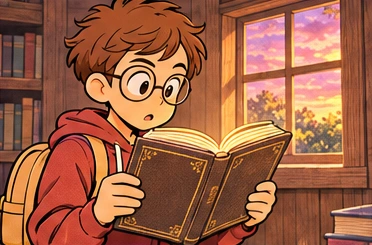
Jack stared at the picture on it. In the picture were trees with white flowers. The trees were on the side of a mountain. Near a wide, rushing stream.
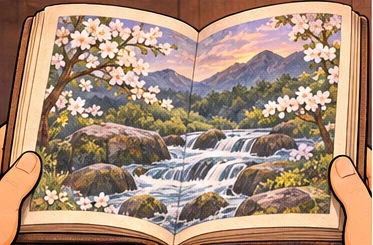
Two people were also in the picture. They wore dark clothes. They had black scarves over their faces. And long swords strapped to their backs.
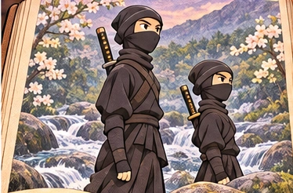
“Oh man,” whispered Jack.
“Who are they?” Annie asked.
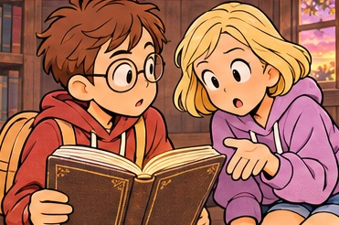
“Ninjas, I think,” said Jack.
“Ninjas? Really?” said Annie.
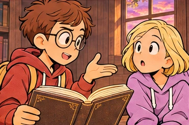
“Morgan must have left the book open to this page for a reason,” said Jack.
“Maybe that’s where she was when the spell got her,” Annie said.
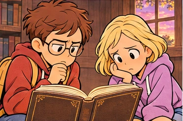
“Or maybe that’s where the four things are,” said Jack.
“Let’s go!” said Annie.
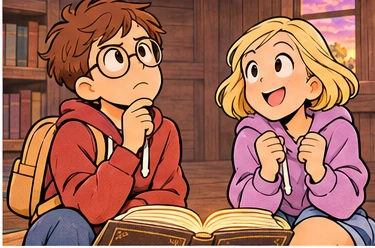
“Now?” said Jack.
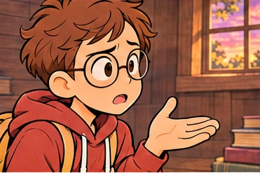
“Yes, Morgan’s in trouble! She needs us now!” said Annie.
“But we should read this book first,” said Jack. “So we’ll be prepared.”
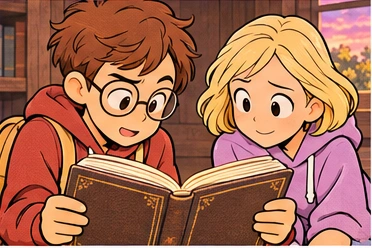
“Forget it!” said Annie. “Every minute counts!” She grabbed the book from Jack.
“Give it back,” he said. “We have to find out about this place.”
Annie held the book out of reach. “We’ll find out when we get there,” she said.
“We don’t even know where there is!” Jack said.
But Annie pointed at the picture. “I wish we could go here,” she said.
The leaves of the oak tree began to shake.
Squeak!
“Don’t be scared, Peanut,” said Annie. She scooped up the mouse. Then she put it in the pouch of her sweatshirt.
The wind began to blow.
It blew harder and harder.
The tree house started to spin.
Faster and faster!
Jack squeezed his eyes shut.
Then everything was still. Absolutely still.
Except for the sound of rushing water.